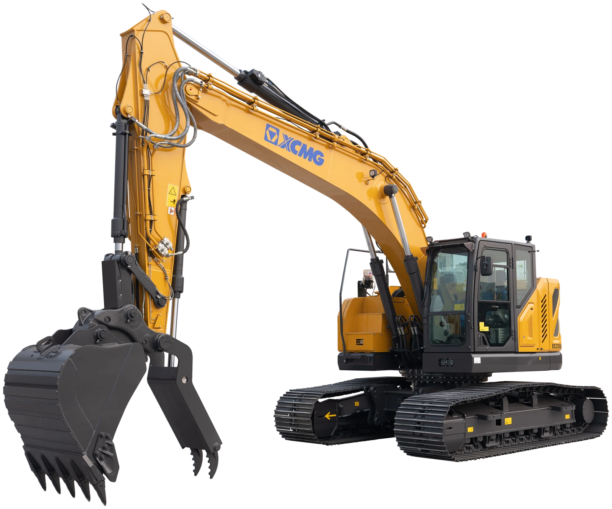
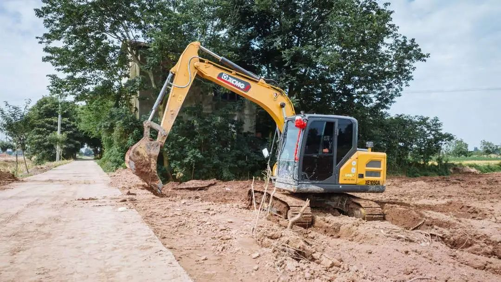
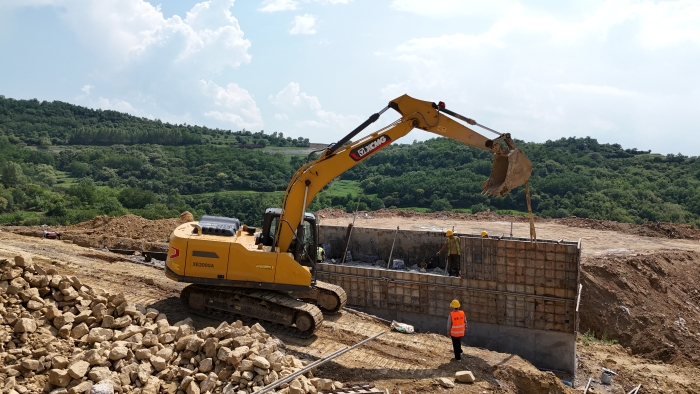
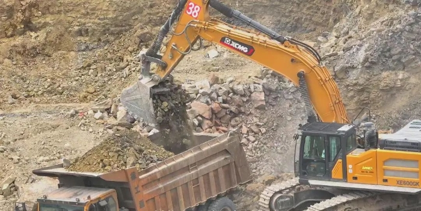
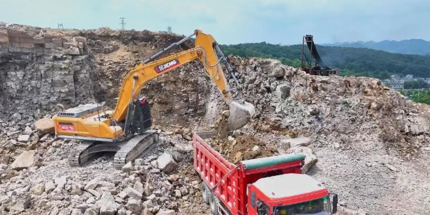
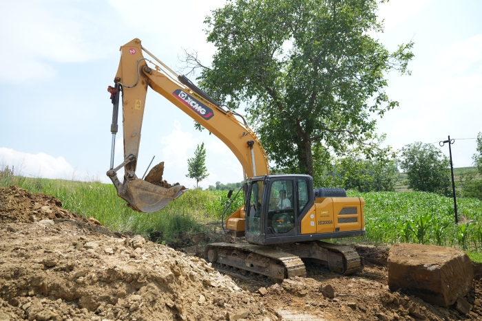

狭窄空间 / 市政庭院
工况表现：卡特 325 59.1 分；XCMG 29.1 分，第 7，距领先产品 30 分。
主要差距项：整机运输宽度、尾部回转半径、整机运输长度。
配置项累计贡献：XCMG 7 分，配置项累计贡献最高。
本页按照统一口径展示参数、标选配、典型工况、配置贡献、差距来源和提升模拟。全部结论可追溯至原始数据表和来源登记。

评分口径：参数综合分 65% + 标选配综合分 35%；工况评分单独展示，不重复计入总体分。
当前可核验差距集中在 配重 kg、液压油自动预热、液压油采样口、自动双速。以下均为原始参数或标选配状态，不用综合分替代实际差异。
配重 kg：XCMG 无配置（/），沃尔沃 ECR255 标配（标配6200；选配7100）。
液压油自动预热：XCMG 无配置（/），卡特 325 标配（标配）。
液压油采样口：XCMG 无配置（/），卡特 325 标配（标配）。
自动双速：XCMG 无配置（/），卡特 325 标配（标配）。
覆盖率低于 60% 的产品不进入排名，仍在右侧表格中保留并标记为“数据不足”。
对标参照：总体排名第一的参考产品为 卡特 325；单项差距主要集中在 工作压力、行走压力、回转压力、尾部回转半径 等具体指标。
硬参数差距：
配置差距：
| 产品 | 总体 | 参数 | 配置 | 数据覆盖 | 完整度等级 |
|---|---|---|---|---|---|
| 卡特 325 | 52.7 | 54 | 50.3 | 85% | 中 |
| 沃尔沃 ECR255 | 48.7 | 48.4 | 49.4 | 90% | 高 |
| 斗山 DX235LCR-7 | 48.1 | 59.2 | 27.5 | 87% | 中 |
| 迪尔 245P | 47.5 | 64.4 | 16.3 | 85% | 中 |
| 现代 HX235A LCR | 36.4 | 42.5 | 25.1 | 95% | 高 |
| XCMG XE235UCR | 35 | 42.1 | 21.8 | 87% | 中 |
| 小松 PC238USLC-11 | 34.4 | 44.6 | 15.4 | 87% | 中 |
| 神钢 SK230SRCL-7 | 32.7 | 40.3 | 18.6 | 95% | 高 |
默认显示 XCMG 与工况领先产品；点击图例可增加或取消品牌，全部取消后恢复全品牌展示。
排名口径：工况字段覆盖率低于 60% 的产品不进入正式排名；缺失项仍保留在指标明细中。





图片来源：徐工官方施工案例，仅用于工况示意；本页参数、配置和排名仍以对应吨级原始数据为准。
工况表现：卡特 325 59.1 分；XCMG 29.1 分，第 7，距领先产品 30 分。
主要差距项：整机运输宽度、尾部回转半径、整机运输长度。
配置项累计贡献：XCMG 7 分，配置项累计贡献最高。
工况表现：沃尔沃 ECR255 68.7 分；XCMG 61.9 分，第 4，距领先产品 6.8 分。
主要差距项：最大挖掘深度、最大挖掘半径、最大地面挖掘半径。
配置项累计贡献：XCMG 9.6 分，配置项累计贡献最高。
工况表现：迪尔 245P 80.1 分；XCMG 45.7 分，第 6，距领先产品 34.4 分。
主要差距项：最大卸载高度、铲斗挖掘力、系统流量。
配置项累计贡献：XCMG 7 分，配置项累计贡献最高。
工况表现：XCMG 有效字段覆盖率 58%，暂不进入正式排名；当前资料领先产品为 现代 HX235A LCR 45.9 分。
主要差距项：工作压力、系统流量、卸油管路。
配置项累计贡献：XCMG 23 分，配置项累计贡献最高。
工况表现：斗山 DX235LCR-7 100 分；XCMG 67.7 分，第 3，距领先产品 32.3 分。
主要差距项：最大牵引力。
配置项累计贡献：配置字段覆盖不足，暂不比较。
工况表现：神钢 SK230SRCL-7 53 分；XCMG 32.3 分，第 8，距领先产品 20.7 分。
主要差距项：整机运输宽度、自动停机、行走速度（高速）。
配置项累计贡献：沃尔沃 ECR255 30.8 分；XCMG 18.2 分，差 12.6 分。
工况特点：看重窄机身、短尾回转、较小运输尺寸和贴边作业能力。
有益配置：可伸缩底盘、动臂偏摆、推土铲偏摆和安全摄像头有助于庭院、市政和受限空间作业。
| 类型 | 关键项 | 权重 |
|---|---|---|
| 参数 | 整机运输宽度 | 18% |
| 参数 | 整机运输长度 | 12% |
| 参数 | 尾部回转半径 | 24% |
| 配置 | 行走报警 | 4% |
| 配置 | 报警灯 | 3% |
| 指标/配置 | 类型 | 权重 | 对工况影响 | XCMG XE235UCR | 卡特 325 | 迪尔 245P | 小松 PC238USLC-11 | 神钢 SK230SRCL-7 | 沃尔沃 ECR255 | 现代 HX235A LCR | 斗山 DX235LCR-7 |
|---|---|---|---|---|---|---|---|---|---|---|---|
| 整机运输宽度 | 参数 | 18% | 越窄越适合入户、园林和人行道受限空间。 | 31900分贡献 0 · 有效数据 | 3170100分贡献 29.5 · 有效数据 | 31900分贡献 0 · 有效数据 | 318050分贡献 14.8 · 有效数据 | 318050分贡献 14.8 · 有效数据 | 31900分贡献 0 · 有效数据 | 31900分贡献 0 · 有效数据 | 31900分贡献 0 · 有效数据 |
| 整机运输长度 | 参数 | 12% | 短车身转场和狭小现场调头更灵活。 | 900539.7分贡献 7.8 · 有效数据 | 889079.3分贡献 15.6 · 有效数据 | 91200分贡献 0 · 有效数据 | 892069分贡献 13.6 · 有效数据 | 8830100分贡献 19.7 · 有效数据 | 903529.3分贡献 5.8 · 有效数据 | 891072.4分贡献 14.2 · 有效数据 | 897051.7分贡献 10.2 · 有效数据 |
| 尾部回转半径 | 参数 | 24% | 尾扫越小越不容易碰墙、碰车和碰围挡。 | 180025分贡献 9.8 · 有效数据 | 1780/181028.1分贡献 11.1 · 有效数据 | 1680100分贡献 39.3 · 有效数据 | 181018.8分贡献 7.4 · 有效数据 | 18400分贡献 0 · 有效数据 | 181018.8分贡献 7.4 · 有效数据 | 178037.5分贡献 14.8 · 有效数据 | 172472.5分贡献 28.5 · 有效数据 |
| 行走报警 | 配置 | 4% | 人车混行环境降低安全风险。 | 标配100分贡献 6.6 · 标配 | /0分贡献 0 · 无配置 | 标配，带消音100分贡献 6.6 · 标配 | 标配100分贡献 6.6 · 标配 | 标配100分贡献 6.6 · 标配 | 选配60分贡献 3.9 · 选配 | 标配100分贡献 6.6 · 标配 | 标配100分贡献 6.6 · 标配 |
| 报警灯 | 配置 | 3% | 市政施工和租赁场景提高周边可感知性。 | 标配100分贡献 4.9 · 标配 | 选配60分贡献 3 · 选配 | /0分贡献 0 · 无配置 | /0分贡献 0 · 无配置 | /0分贡献 0 · 无配置 | 选配60分贡献 3 · 选配 | 选配60分贡献 3 · 选配 | 标配100分贡献 4.9 · 标配 |
同工况排名第一的参考产品为 卡特 325；XCMG 的主要差距项为 整机运输宽度、尾部回转半径、整机运输长度。
配置项暂未发现明确弱项，建议继续核验竞品配置资料并维护现有标配口径。
模拟结果仅反映当前评分模型，不替代工程验证、成本评审和市场需求判断。
工况特点：核心是下挖深度、挖掘半径、斗杆挖掘力和长斗杆覆盖能力。
有益配置：长斗杆、AUX 管路和动臂斗杆防爆阀有助于深沟、管线和基础作业。
| 类型 | 关键项 | 权重 |
|---|---|---|
| 参数 | 最大挖掘深度 | 28% |
| 参数 | 最大挖掘半径 | 14% |
| 参数 | 最大地面挖掘半径 | 12% |
| 参数 | 斗杆挖掘力 | 12% |
| 参数 | 标配斗杆 | 8% |
| 参数 | 选配斗杆 | 6% |
| 配置 | 动臂斗杆防爆阀 | 6% |
| 配置 | AUX1管路 | 4% |
| 指标/配置 | 类型 | 权重 | 对工况影响 | XCMG XE235UCR | 卡特 325 | 迪尔 245P | 小松 PC238USLC-11 | 神钢 SK230SRCL-7 | 沃尔沃 ECR255 | 现代 HX235A LCR | 斗山 DX235LCR-7 |
|---|---|---|---|---|---|---|---|---|---|---|---|
| 最大挖掘深度 | 参数 | 28% | 深度决定基础沟槽和管线施工覆盖范围。 | 664637.7分贡献 12.3 · 有效数据 | 670068.6分贡献 26.7 · 有效数据 | 662022.9分贡献 7.4 · 有效数据 | 662022.9分贡献 7.4 · 有效数据 | 65800分贡献 0 · 有效数据 | 6755100分贡献 30.4 · 有效数据 | 667051.4分贡献 15.7 · 有效数据 | 668057.1分贡献 18.6 · 有效数据 |
| 最大挖掘半径 | 参数 | 14% | 半径越大，站位不变时覆盖面越宽。 | 994459.5分贡献 9.7 · 有效数据 | /-分贡献 - · 待核验 | 10110100分贡献 16.3 · 有效数据 | 987843.4分贡献 7.1 · 有效数据 | 97000分贡献 0 · 有效数据 | 989046.3分贡献 7.1 · 有效数据 | 991051.2分贡献 7.8 · 有效数据 | 983031.7分贡献 5.2 · 有效数据 |
| 最大地面挖掘半径 | 参数 | 12% | 平面沟槽连续开挖效率更高。 | 977867分贡献 9.4 · 有效数据 | 978067.6分贡献 11.3 · 有效数据 | 9900100分贡献 14 · 有效数据 | 970045.9分贡献 6.4 · 有效数据 | 95300分贡献 0 · 有效数据 | 973555.4分贡献 7.2 · 有效数据 | 975059.5分贡献 7.8 · 有效数据 | 964531.1分贡献 4.3 · 有效数据 |
| 斗杆挖掘力 | 参数 | 12% | 深挖末端破土和清底能力。 | 107.7/116.290.5分贡献 12.6 · 有效数据 | 106/11583.8分贡献 14 · 有效数据 | 114100分贡献 14 · 有效数据 | 10872.2分贡献 10.1 · 有效数据 | 88/96.80分贡献 0 · 有效数据 | 104/11067.6分贡献 8.8 · 有效数据 | 106.9/116.188.4分贡献 11.5 · 有效数据 | 109.880.6分贡献 11.2 · 有效数据 |
| 标配斗杆 | 参数 | 8% | 斗杆长度影响标配状态下的深挖覆盖。 | 291072.7分贡献 6.8 · 有效数据 | 290054.5分贡献 6.1 · 有效数据 | 291072.7分贡献 6.8 · 有效数据 | 2925100分贡献 9.3 · 有效数据 | 28700分贡献 0 · 有效数据 | 290054.5分贡献 4.7 · 有效数据 | 292090.9分贡献 7.9 · 有效数据 | 290054.5分贡献 5.1 · 有效数据 |
| 选配斗杆 | 参数 | 6% | 选配斗杆说明是否可向深挖场景扩展。 | /-分贡献 - · 待核验 | /-分贡献 - · 待核验 | /-分贡献 - · 待核验 | /-分贡献 - · 待核验 | /-分贡献 - · 待核验 | 2500100分贡献 6.5 · 有效数据 | 2000/24000分贡献 0 · 有效数据 | /-分贡献 - · 待核验 |
| 动臂斗杆防爆阀 | 配置 | 6% | 基础施工和吊装附近作业的安全配置。 | 选配60分贡献 4.2 · 选配 | /0分贡献 0 · 无配置 | /0分贡献 0 · 无配置 | 标配100分贡献 7 · 标配 | 选配60分贡献 4.2 · 选配 | /0分贡献 0 · 无配置 | 选配60分贡献 3.9 · 选配 | 选配60分贡献 4.2 · 选配 |
| AUX1管路 | 配置 | 4% | 便于搭配夯实、破碎和清沟属具。 | 标配100分贡献 4.7 · 标配 | 标配100分贡献 5.6 · 标配 | 标配100分贡献 4.7 · 标配 | 选配60分贡献 2.8 · 选配 | 标配100分贡献 4.7 · 标配 | 选配60分贡献 2.6 · 选配 | 标配100分贡献 4.3 · 标配 | 标配100分贡献 4.7 · 标配 |
| AUX2管路 | 配置 | 2% | 旋转类属具扩展能力。 | 标配100分贡献 2.3 · 标配 | /0分贡献 0 · 无配置 | /0分贡献 0 · 无配置 | /0分贡献 0 · 无配置 | 选配60分贡献 1.4 · 选配 | 选配60分贡献 1.3 · 选配 | 选配60分贡献 1.3 · 选配 | 选配60分贡献 1.4 · 选配 |
同工况排名第一的参考产品为 沃尔沃 ECR255；XCMG 的主要差距项为 最大挖掘深度、最大挖掘半径、最大地面挖掘半径。
模拟结果仅反映当前评分模型，不替代工程验证、成本评审和市场需求判断。
工况特点：看卸载高度、挖掘力、液压流量、回转和行走响应。
有益配置：经济模式、自动怠速、推土铲浮动和快换管路影响短循环油耗与辅助动作效率。
| 类型 | 关键项 | 权重 |
|---|---|---|
| 参数 | 最大卸载高度 | 18% |
| 参数 | 铲斗挖掘力 | 13% |
| 参数 | 斗杆挖掘力 | 8% |
| 参数 | 系统流量 | 14% |
| 参数 | 发动机净功率 | 10% |
| 参数 | 发动机总功率 | 8% |
| 参数 | 行走速度（高速） | 5% |
| 参数 | 行走速度（低速） | 2% |
| 指标/配置 | 类型 | 权重 | 对工况影响 | XCMG XE235UCR | 卡特 325 | 迪尔 245P | 小松 PC238USLC-11 | 神钢 SK230SRCL-7 | 沃尔沃 ECR255 | 现代 HX235A LCR | 斗山 DX235LCR-7 |
|---|---|---|---|---|---|---|---|---|---|---|---|
| 最大卸载高度 | 参数 | 18% | 影响能否顺利装车和越过车厢。 | 791936分贡献 7.9 · 有效数据 | 790032.8分贡献 6.6 · 有效数据 | 8290100分贡献 21.4 · 有效数据 | 782519.8分贡献 3.9 · 有效数据 | 77100分贡献 0 · 有效数据 | 787027.6分贡献 5.4 · 有效数据 | 790032.8分贡献 6.4 · 有效数据 | 794039.7分贡献 7.8 · 有效数据 |
| 铲斗挖掘力 | 参数 | 13% | 装料、切土和短循环满斗能力。 | 129.3/139.523.5分贡献 3.7 · 有效数据 | 150/16385.2分贡献 12.3 · 有效数据 | 15889.4分贡献 13.8 · 有效数据 | 14964.2分贡献 9.1 · 有效数据 | 120/1320分贡献 0 · 有效数据 | 141/14953.1分贡献 7.5 · 有效数据 | 152/16590.8分贡献 12.8 · 有效数据 | 161.8100分贡献 14.1 · 有效数据 |
| 斗杆挖掘力 | 参数 | 8% | 连续挖装时保持切入力。 | 107.7/116.290.5分贡献 8.8 · 有效数据 | 106/11583.8分贡献 7.4 · 有效数据 | 114100分贡献 9.5 · 有效数据 | 10872.2分贡献 6.3 · 有效数据 | 88/96.80分贡献 0 · 有效数据 | 104/11067.6分贡献 5.9 · 有效数据 | 106.9/116.188.4分贡献 7.7 · 有效数据 | 109.880.6分贡献 7 · 有效数据 |
| 系统流量 | 参数 | 14% | 复合动作速度与液压响应。 | 240.5x233分贡献 5.6 · 有效数据 | 214.5x26.6分贡献 1 · 有效数据 | 212x2+189100分贡献 16.7 · 有效数据 | 47529.9分贡献 4.6 · 有效数据 | 220x212.2分贡献 1.9 · 有效数据 | 208x20分贡献 0 · 有效数据 | 221x213.2分贡献 2 · 有效数据 | 222x214.2分贡献 2.2 · 有效数据 |
| 发动机净功率 | 参数 | 10% | 连续循环中的动力储备。 | /-分贡献 - · 待核验 | 128.5100分贡献 11.1 · 有效数据 | 11924分贡献 2.9 · 有效数据 | 1160分贡献 0 · 有效数据 | 12248分贡献 5.2 · 有效数据 | 12896分贡献 10.4 · 有效数据 | 12788分贡献 9.6 · 有效数据 | 12788分贡献 9.6 · 有效数据 |
| 发动机总功率 | 参数 | 8% | 动力系统基础能力。 | 12933.3分贡献 3.3 · 有效数据 | 129.435.6分贡献 3.2 · 有效数据 | /-分贡献 - · 待核验 | 1230分贡献 0 · 有效数据 | 12722.2分贡献 1.9 · 有效数据 | 12933.3分贡献 2.9 · 有效数据 | 12933.3分贡献 2.9 · 有效数据 | 141100分贡献 8.7 · 有效数据 |
| 行走速度（高速） | 参数 | 5% | 场内短距离转场效率。 | 3.4/5.30分贡献 0 · 有效数据 | /5.780分贡献 4.4 · 有效数据 | 3.5/5.540分贡献 2.4 · 有效数据 | 3/5.540分贡献 2.2 · 有效数据 | 3.5/5.8100分贡献 5.4 · 有效数据 | 3.4/5.660分贡献 3.3 · 有效数据 | 3.2/5.660分贡献 3.3 · 有效数据 | 3.2/5.8100分贡献 5.4 · 有效数据 |
| 行走速度（低速） | 参数 | 2% | 接近卡车和料堆时的精细行走控制。 | 3.4/5.380分贡献 2 · 有效数据 | /5.7-分贡献 - · 待核验 | 3.5/5.5100分贡献 2.4 · 有效数据 | 3/5.50分贡献 0 · 有效数据 | 3.5/5.8100分贡献 2.2 · 有效数据 | 3.4/5.680分贡献 1.7 · 有效数据 | 3.2/5.640分贡献 0.9 · 有效数据 | 3.2/5.840分贡献 0.9 · 有效数据 |
| 回转速度 | 参数 | 7% | 短循环挖装回转效率。 | 12.168.7分贡献 5.9 · 有效数据 | 11.127.5分贡献 0.6 · 有效数据 | 11.850分贡献 4.2 · 有效数据 | 110分贡献 0 · 有效数据 | 12.6100分贡献 7.6 · 有效数据 | 1262.5分贡献 4.8 · 有效数据 | 11.318.8分贡献 1.4 · 有效数据 | 11.531.3分贡献 2.4 · 有效数据 |
| 自动怠速 | 配置 | 4% | 等待装车和短暂停顿时降低怠速油耗。 | 标配100分贡献 4.9 · 标配 | /0分贡献 0 · 无配置 | 标配100分贡献 4.8 · 标配 | 标配100分贡献 4.3 · 标配 | 标配100分贡献 4.3 · 标配 | 标配100分贡献 4.3 · 标配 | 标配100分贡献 4.3 · 标配 | 标配100分贡献 4.3 · 标配 |
| 快换管路 | 配置 | 3% | 多属具切换减少停机时间。 | 标配100分贡献 3.7 · 标配 | 标配100分贡献 3.3 · 标配 | 选配60分贡献 2.1 · 选配 | /0分贡献 0 · 无配置 | /0分贡献 0 · 无配置 | 选配60分贡献 2 · 选配 | 标配100分贡献 3.3 · 标配 | /0分贡献 0 · 无配置 |
同工况排名第一的参考产品为 迪尔 245P；XCMG 的主要差距项为 最大卸载高度、铲斗挖掘力、系统流量。
配置项暂未发现明确弱项，建议继续核验竞品配置资料并维护现有标配口径。
模拟结果仅反映当前评分模型，不替代工程验证、成本评审和市场需求判断。
工况特点：重点是液压系统流量、压力和 AUX 管路覆盖。
有益配置：AUX1/AUX2 管路、卸油管路、流量保持和快换管路影响破碎锤、拇指夹、螺旋钻等属具适配。
| 类型 | 关键项 | 权重 |
|---|---|---|
| 参数 | 系统流量 | 14% |
| 参数 | 工作压力 | 12% |
| 参数 | AUX1流量 | 14% |
| 参数 | AUX1压力 | 10% |
| 参数 | AUX2流量 | 8% |
| 参数 | AUX2压力 | 8% |
| 配置 | AUX1管路 | 10% |
| 配置 | AUX2管路 | 8% |
| 指标/配置 | 类型 | 权重 | 对工况影响 | XCMG XE235UCR | 卡特 325 | 迪尔 245P | 小松 PC238USLC-11 | 神钢 SK230SRCL-7 | 沃尔沃 ECR255 | 现代 HX235A LCR | 斗山 DX235LCR-7 |
|---|---|---|---|---|---|---|---|---|---|---|---|
| 系统流量 | 参数 | 14% | 决定液压属具连续工作的供油基础。 | 240.5x233分贡献 8.4 · 有效数据 | 214.5x26.6分贡献 1.7 · 有效数据 | 212x2+189100分贡献 25.5 · 有效数据 | 47529.9分贡献 7.6 · 有效数据 | 220x212.2分贡献 1.8 · 有效数据 | 208x20分贡献 0 · 有效数据 | 221x213.2分贡献 1.9 · 有效数据 | 222x214.2分贡献 3.6 · 有效数据 |
| 工作压力 | 参数 | 12% | 破碎、夹持和钻孔属具输出能力。 | 34.30分贡献 0 · 有效数据 | 3523.3分贡献 5.1 · 有效数据 | 34.30分贡献 0 · 有效数据 | 37.3100分贡献 21.8 · 有效数据 | 34.30分贡献 0 · 有效数据 | 34.30分贡献 0 · 有效数据 | 34.30分贡献 0 · 有效数据 | 34.30分贡献 0 · 有效数据 |
| AUX1流量 | 参数 | 14% | 主属具回路供油能力。 | /-分贡献 - · 待核验 | /-分贡献 - · 待核验 | /-分贡献 - · 待核验 | /-分贡献 - · 待核验 | 220x20分贡献 0 · 有效数据 | /-分贡献 - · 待核验 | 100-400100分贡献 14.7 · 有效数据 | /-分贡献 - · 待核验 |
| AUX1压力 | 参数 | 10% | 主属具负载能力。 | /-分贡献 - · 待核验 | /-分贡献 - · 待核验 | /-分贡献 - · 待核验 | /-分贡献 - · 待核验 | 34.3100分贡献 10.5 · 有效数据 | /-分贡献 - · 待核验 | 10-350分贡献 0 · 有效数据 | /-分贡献 - · 待核验 |
| AUX2流量 | 参数 | 8% | 旋转/夹持类辅回路能力。 | /-分贡献 - · 待核验 | /-分贡献 - · 待核验 | /-分贡献 - · 待核验 | /-分贡献 - · 待核验 | 40.60分贡献 0 · 有效数据 | /-分贡献 - · 待核验 | 53100分贡献 8.4 · 有效数据 | /-分贡献 - · 待核验 |
| AUX2压力 | 参数 | 8% | 决定辅回路可匹配属具的压力范围。 | /-分贡献 - · 待核验 | /-分贡献 - · 待核验 | /-分贡献 - · 待核验 | /-分贡献 - · 待核验 | 20.6100分贡献 8.4 · 有效数据 | /-分贡献 - · 待核验 | 160分贡献 0 · 有效数据 | /-分贡献 - · 待核验 |
| AUX1管路 | 配置 | 10% | 破碎锤和常规属具基础配置。 | 标配100分贡献 18.2 · 标配 | 标配100分贡献 18.2 · 标配 | 标配100分贡献 18.2 · 标配 | 选配60分贡献 10.9 · 选配 | 标配100分贡献 10.5 · 标配 | 选配60分贡献 10.9 · 选配 | 标配100分贡献 10.5 · 标配 | 标配100分贡献 18.2 · 标配 |
| AUX2管路 | 配置 | 8% | 旋转夹、拇指夹等复合属具更友好。 | 标配100分贡献 14.5 · 标配 | /0分贡献 0 · 无配置 | /0分贡献 0 · 无配置 | /0分贡献 0 · 无配置 | 选配60分贡献 5.1 · 选配 | 选配60分贡献 8.7 · 选配 | 选配60分贡献 5.1 · 选配 | 选配60分贡献 8.7 · 选配 |
| 卸油管路 | 配置 | 6% | 破碎锤回油保护和热管理。 | /0分贡献 0 · 无配置 | /0分贡献 0 · 无配置 | /0分贡献 0 · 无配置 | /0分贡献 0 · 无配置 | /0分贡献 0 · 无配置 | 选配60分贡献 6.5 · 选配 | /0分贡献 0 · 无配置 | /0分贡献 0 · 无配置 |
| 快换管路 | 配置 | 5% | 多属具场景减少切换时间。 | 标配100分贡献 9.1 · 标配 | 标配100分贡献 9.1 · 标配 | 选配60分贡献 5.5 · 选配 | /0分贡献 0 · 无配置 | /0分贡献 0 · 无配置 | 选配60分贡献 5.5 · 选配 | 标配100分贡献 5.3 · 标配 | /0分贡献 0 · 无配置 |
XCMG 有效字段覆盖率为 58%，暂不进入正式排名；当前资料中领先产品为 现代 HX235A LCR，已知差距项为 工作压力、系统流量、卸油管路。
XCMG 有效字段覆盖率为 58%，低于正式排名门槛，暂不生成模拟排名。请先补齐该工况缺失参数或配置，再开展提升方案评估。
工况特点：关注接地比压、履带宽度、牵引、爬坡和起吊能力。
有益配置：副配重和推土铲浮动有助于改善稳定性与整平效率；起吊边界仍应以载荷表和作业规范为准。
| 类型 | 关键项 | 权重 |
|---|---|---|
| 参数 | 履带宽度 | 9% |
| 参数 | 接地比压 | 14% |
| 参数 | 最大牵引力 | 13% |
| 指标/配置 | 类型 | 权重 | 对工况影响 | XCMG XE235UCR | 卡特 325 | 迪尔 245P | 小松 PC238USLC-11 | 神钢 SK230SRCL-7 | 沃尔沃 ECR255 | 现代 HX235A LCR | 斗山 DX235LCR-7 |
|---|---|---|---|---|---|---|---|---|---|---|---|
| 履带宽度 | 参数 | 9% | 较宽履带通常有助于降低接地比压并改善稳定性，但会增加运输宽度。 | 800100分贡献 25 · 有效数据 | 7900分贡献 0 · 有效数据 | 800100分贡献 25 · 有效数据 | 800100分贡献 25 · 有效数据 | 800100分贡献 25 · 有效数据 | 800100分贡献 25 · 有效数据 | 800100分贡献 25 · 有效数据 | 800100分贡献 40.9 · 有效数据 |
| 接地比压 | 参数 | 14% | 越低越适合软土、草地和回填土表面。 | 41100分贡献 38.9 · 有效数据 | 42.3-57.80分贡献 0 · 有效数据 | 40/4583.4分贡献 32.4 · 有效数据 | 39.2-51.154.1分贡献 21.1 · 有效数据 | 41100分贡献 38.9 · 有效数据 | 34.3-58.838.7分贡献 15 · 有效数据 | 38.4-50.164.1分贡献 24.9 · 有效数据 | /-分贡献 - · 待核验 |
| 最大牵引力 | 参数 | 13% | 坡地转场和湿软场地脱困能力。 | 21010.6分贡献 3.8 · 有效数据 | 2010分贡献 0 · 有效数据 | 2032.3分贡献 0.8 · 有效数据 | 2021.2分贡献 0.4 · 有效数据 | 22629.3分贡献 10.6 · 有效数据 | 2099.4分贡献 3.4 · 有效数据 | 217.719.6分贡献 7.1 · 有效数据 | 286.3100分贡献 59.1 · 有效数据 |
同工况排名第一的参考产品为 斗山 DX235LCR-7；XCMG 的主要差距项为 最大牵引力。
配置项暂未发现明确弱项，建议继续核验竞品配置资料并维护现有标配口径。
模拟结果仅反映当前评分模型，不替代工程验证、成本评审和市场需求判断。
工况特点：看运输尺寸、油耗管理、易用性、安全提醒和远程管理。
有益配置：自动怠速、自动停机、远程信息处理、防盗、摄像头和报警配置会影响油耗管理、资产管理和多客户使用便利性。
| 类型 | 关键项 | 权重 |
|---|---|---|
| 参数 | 整机运输宽度 | 10% |
| 参数 | 整机运输长度 | 8% |
| 参数 | 整机运输高度 | 7% |
| 参数 | 操作重量 | 8% |
| 参数 | 行走速度（高速） | 5% |
| 参数 | 行走速度（低速） | 2% |
| 配置 | 自动怠速 | 6% |
| 配置 | 自动停机 | 8% |
| 指标/配置 | 类型 | 权重 | 对工况影响 | XCMG XE235UCR | 卡特 325 | 迪尔 245P | 小松 PC238USLC-11 | 神钢 SK230SRCL-7 | 沃尔沃 ECR255 | 现代 HX235A LCR | 斗山 DX235LCR-7 |
|---|---|---|---|---|---|---|---|---|---|---|---|
| 整机运输宽度 | 参数 | 10% | 拖车、仓库和门洞通过性。 | 31900分贡献 0 · 有效数据 | 3170100分贡献 11.2 · 有效数据 | 31900分贡献 0 · 有效数据 | 318050分贡献 5.5 · 有效数据 | 318050分贡献 5.5 · 有效数据 | 31900分贡献 0 · 有效数据 | 31900分贡献 0 · 有效数据 | 31900分贡献 0 · 有效数据 |
| 整机运输长度 | 参数 | 8% | 拖车装载和仓储占地。 | 900539.7分贡献 3.5 · 有效数据 | 889079.3分贡献 7.1 · 有效数据 | 91200分贡献 0 · 有效数据 | 892069分贡献 6.1 · 有效数据 | 8830100分贡献 8.8 · 有效数据 | 903529.3分贡献 2.6 · 有效数据 | 891072.4分贡献 6.4 · 有效数据 | 897051.7分贡献 4.5 · 有效数据 |
| 整机运输高度 | 参数 | 7% | 低矮通道和运输合规性。 | 318144.5分贡献 3.4 · 有效数据 | 322031分贡献 2.4 · 有效数据 | 3020100分贡献 7.7 · 有效数据 | 325519分贡献 1.5 · 有效数据 | 316051.7分贡献 4 · 有效数据 | 33100分贡献 0 · 有效数据 | 32906.9分贡献 0.5 · 有效数据 | 312364.5分贡献 5 · 有效数据 |
| 操作重量 | 参数 | 8% | 拖车级别和租赁客户自提门槛。 | 26300 (不带Blade)40.8分贡献 3.6 · 有效数据 | 26200-284006.8分贡献 0.6 · 有效数据 | 25800 (不带Blade)57.8分贡献 5.1 · 有效数据 | 24600-25250 (不带Blade)87.6分贡献 7.7 · 有效数据 | 275000分贡献 0 · 有效数据 | 24270-2819543.1分贡献 3.8 · 有效数据 | 24560 (不带Blade)100分贡献 8.8 · 有效数据 | 2696118.3分贡献 1.6 · 有效数据 |
| 行走速度（高速） | 参数 | 5% | 场内快速转场效率。 | 3.4/5.30分贡献 0 · 有效数据 | /5.780分贡献 4.5 · 有效数据 | 3.5/5.540分贡献 2.2 · 有效数据 | 3/5.540分贡献 2.2 · 有效数据 | 3.5/5.8100分贡献 5.5 · 有效数据 | 3.4/5.660分贡献 3.3 · 有效数据 | 3.2/5.660分贡献 3.3 · 有效数据 | 3.2/5.8100分贡献 5.5 · 有效数据 |
| 行走速度（低速） | 参数 | 2% | 多客户使用时的低速操控友好性。 | 3.4/5.380分贡献 1.8 · 有效数据 | /5.7-分贡献 - · 待核验 | 3.5/5.5100分贡献 2.2 · 有效数据 | 3/5.50分贡献 0 · 有效数据 | 3.5/5.8100分贡献 2.2 · 有效数据 | 3.4/5.680分贡献 1.8 · 有效数据 | 3.2/5.640分贡献 0.9 · 有效数据 | 3.2/5.840分贡献 0.9 · 有效数据 |
| 自动怠速 | 配置 | 6% | 减少等待和停顿阶段的怠速油耗。 | 标配100分贡献 6.6 · 标配 | /0分贡献 0 · 无配置 | 标配100分贡献 6.6 · 标配 | 标配100分贡献 6.6 · 标配 | 标配100分贡献 6.6 · 标配 | 标配100分贡献 6.6 · 标配 | 标配100分贡献 6.6 · 标配 | 标配100分贡献 6.6 · 标配 |
| 自动停机 | 配置 | 8% | 降低无效怠速、油耗和租赁客户使用成本。 | /0分贡献 0 · 无配置 | /0分贡献 0 · 无配置 | 标配100分贡献 8.8 · 标配 | /0分贡献 0 · 无配置 | 标配100分贡献 8.8 · 标配 | 选配60分贡献 5.3 · 选配 | 标配100分贡献 8.8 · 标配 | 标配100分贡献 8.8 · 标配 |
| 远程信息处理系统 | 配置 | 9% | 定位、工时、维保和资产管理。 | /0分贡献 0 · 无配置 | Vision Link40分贡献 4 · 需确认 | JD Link40分贡献 4 · 需确认 | KOMTRAX40分贡献 4 · 需确认 | KOMEXS40分贡献 4 · 需确认 | Caretrack40分贡献 4 · 需确认 | Hi-mate40分贡献 4 · 需确认 | My Develon40分贡献 4 · 需确认 |
| 密码启动/防盗 | 配置 | 5% | 租赁资产防盗和授权使用。 | /0分贡献 0 · 无配置 | /0分贡献 0 · 无配置 | /0分贡献 0 · 无配置 | /0分贡献 0 · 无配置 | /0分贡献 0 · 无配置 | 标配100分贡献 5.5 · 标配 | /0分贡献 0 · 无配置 | /0分贡献 0 · 无配置 |
| 一键启动 | 配置 | 3% | 多客户使用更方便。 | /0分贡献 0 · 无配置 | 标配100分贡献 3.4 · 标配 | /0分贡献 0 · 无配置 | /0分贡献 0 · 无配置 | /0分贡献 0 · 无配置 | 标配100分贡献 3.3 · 标配 | /0分贡献 0 · 无配置 | /0分贡献 0 · 无配置 |
| USB电源 | 配置 | 2% | 基础便利配置。 | 标配100分贡献 2.2 · 标配 | 标配100分贡献 2.2 · 标配 | /0分贡献 0 · 无配置 | /0分贡献 0 · 无配置 | /0分贡献 0 · 无配置 | /0分贡献 0 · 无配置 | 标配100分贡献 2.2 · 标配 | /0分贡献 0 · 无配置 |
| 蓝牙收音机 | 配置 | 2% | 驾驶舒适性。 | 选配60分贡献 1.3 · 选配 | 标配100分贡献 2.2 · 标配 | /0分贡献 0 · 无配置 | /0分贡献 0 · 无配置 | 标配100分贡献 2.2 · 标配 | 选配60分贡献 1.3 · 选配 | /0分贡献 0 · 无配置 | 标配100分贡献 2.2 · 标配 |
| 手机托 | 配置 | 2% | 租赁客户通用便利性。 | /0分贡献 0 · 无配置 | /0分贡献 0 · 无配置 | /0分贡献 0 · 无配置 | /0分贡献 0 · 无配置 | /0分贡献 0 · 无配置 | /0分贡献 0 · 无配置 | /0分贡献 0 · 无配置 | /0分贡献 0 · 无配置 |
| 报警灯 | 配置 | 4% | 提高设备在市政和工地环境中的可见性。 | 标配100分贡献 4.4 · 标配 | 选配60分贡献 2.7 · 选配 | /0分贡献 0 · 无配置 | /0分贡献 0 · 无配置 | /0分贡献 0 · 无配置 | 选配60分贡献 2.6 · 选配 | 选配60分贡献 2.6 · 选配 | 标配100分贡献 4.4 · 标配 |
| 行走报警 | 配置 | 5% | 人员密集场景安全提醒。 | 标配100分贡献 5.5 · 标配 | /0分贡献 0 · 无配置 | 标配，带消音100分贡献 5.5 · 标配 | 标配100分贡献 5.5 · 标配 | 标配100分贡献 5.5 · 标配 | 选配60分贡献 3.3 · 选配 | 标配100分贡献 5.5 · 标配 | 标配100分贡献 5.5 · 标配 |
| 电子围栏 | 配置 | 3% | 租赁资产区域管理。 | /0分贡献 0 · 无配置 | 标配2D100分贡献 3.4 · 标配 | /0分贡献 0 · 无配置 | /0分贡献 0 · 无配置 | /0分贡献 0 · 无配置 | 选配60分贡献 2 · 选配 | /0分贡献 0 · 无配置 | /0分贡献 0 · 无配置 |
| 工作灯延迟关闭 | 配置 | 2% | 夜间停机和离场便利性。 | /0分贡献 0 · 无配置 | 标配100分贡献 2.2 · 标配 | /0分贡献 0 · 无配置 | /0分贡献 0 · 无配置 | /0分贡献 0 · 无配置 | /0分贡献 0 · 无配置 | /0分贡献 0 · 无配置 | /0分贡献 0 · 无配置 |
同工况排名第一的参考产品为 神钢 SK230SRCL-7；XCMG 的主要差距项为 整机运输宽度、自动停机、行走速度（高速）。
模拟结果仅反映当前评分模型，不替代工程验证、成本评审和市场需求判断。
| 类别 | 指标 | 单位 | XCMG XE235UCR | 卡特 325 | 迪尔 245P | 小松 PC238USLC-11 | 神钢 SK230SRCL-7 | 沃尔沃 ECR255 | 现代 HX235A LCR | 斗山 DX235LCR-7 |
|---|---|---|---|---|---|---|---|---|---|---|
| 运输参数 | 操作重量 | kg | 26300 (不带Blade) | 26200-28400 | 25800 (不带Blade) | 24600-25250 (不带Blade) | 27500 | 24270-28195 | 24560 (不带Blade) | 26961 |
| 运输参数 | 整机运输宽度 | mm | 3190 | 3170 | 3190 | 3180 | 3180 | 3190 | 3190 | 3190 |
| 运输参数 | 整机运输高度 | mm | 3181 | 3220 | 3020 | 3255 | 3160 | 3310 | 3290 | 3123 |
| 运输参数 | 整机运输长度 | mm | 9005 | 8890 | 9120 | 8920 | 8830 | 9035 | 8910 | 8970 |
| 接地参数 | 轨距 | mm | 2390 | 2380 | 2390 | 2380 | 2390 | 2390 | 2390 | 2390 |
| 接地参数 | 轴距 | mm | 3647 | 3650 | 3660 | 3655 | 3660 | 3660 | 3650 | 3650 |
| 接地参数 | 履带长度 | mm | 4444 | 4460 | 4460 | 4450 | 4450 | 4455 | 4446 | 4446 |
| 接地参数 | 履带宽度 | mm | 800 | 790 | 800 | 800 | 800 | 800 | 800 | 800 |
| 工作参数 | 最大挖掘高度 | mm | 10899 | 10970 | 11230 | 10700 | 10580 | 10915 | 10820 | 10805 |
| 工作参数 | 最大卸载高度 | mm | 7919 | 7900 | 8290 | 7825 | 7710 | 7870 | 7900 | 7940 |
| 工作参数 | 最大挖掘深度 | mm | 6646 | 6700 | 6620 | 6620 | 6580 | 6755 | 6670 | 6680 |
| 工作参数 | 最大挖掘半径 | mm | 9944 | / | 10110 | 9878 | 9700 | 9890 | 9910 | 9830 |
| 工作参数 | 最大地面挖掘半径 | mm | 9778 | 9780 | 9900 | 9700 | 9530 | 9735 | 9750 | 9645 |
| 工作参数 | 尾部回转半径 | mm | 1800 | 1780/1810 | 1680 | 1810 | 1840 | 1810 | 1780 | 1724 |
| 动力 | 发动机总功率 | kW | 129 | 129.4 | / | 123 | 127 | 129 | 129 | 141 |
| 动力 | 发动机净功率 | kW | / | 128.5 | 119 | 116 | 122 | 128 | 127 | 127 |
| 工作装置 | 标配斗杆 | mm | 2910 | 2900 | 2910 | 2925 | 2870 | 2900 | 2920 | 2900 |
| 工作装置 | 标配动臂 | mm | 5680 | 5700 | / | 5700 | 5620 | 5700 | 5680 | 5700 |
| 工作装置 | 选配斗杆 | mm | / | / | / | / | / | 2500 | 2000/2400 | / |
| 工作装置 | 选配动臂 | mm | / | 二节臂 | / | / | / | 5760二节臂 | 二节臂 | / |
| 液压系统 | 液压系统 | 类别 | 正流量 | 全电控 | 三泵 | 负载敏感 | / | 全电控 | / | / |
| 液压系统 | 系统流量 | L/min | 240.5x2 | 214.5x2 | 212x2+189 | 475 | 220x2 | 208x2 | 221x2 | 222x2 |
| 液压系统 | 工作压力 | MPa | 34.3 | 35 | 34.3 | 37.3 | 34.3 | 34.3 | 34.3 | 34.3 |
| 液压系统 | 行走压力 | MPa | 34.3 | 35 | 35.5 | 37.3 | 34.3 | 34.3 | 34.3 | 36.3 |
| 液压系统 | 回转压力 | MPa | 27.5 | 27.5 | 32.3 | 29.4 | 29 | 29.5 | 27.9 | 29.4 |
| 液压系统 | 增压压力 | MPa | 37 | 38 | 38 | / | 37.8 | / | 37.3 | 36.3 |
| 液压系统 | AUX1流量 | L/min | / | / | / | / | 220x2 | / | 100-400 | / |
| 液压系统 | AUX1压力 | MPa | / | / | / | / | 34.3 | / | 10-35 | / |
| 液压系统 | AUX2流量 | L/min | / | / | / | / | 40.6 | / | 53 | / |
| 液压系统 | AUX2压力 | MPa | / | / | / | / | 20.6 | / | 16 | / |
| 行走 | 行走速度（低速/高速） | km/h | 3.4/5.3 | /5.7 | 3.5/5.5 | 3/5.5 | 3.5/5.8 | 3.4/5.6 | 3.2/5.6 | 3.2/5.8 |
| 行走 | 最大牵引力 | kN | 210 | 201 | 203 | 202 | 226 | 209 | 217.7 | 286.3 |
| 行走 | 接地比压 | kPa | 41 | 42.3-57.8 | 40/45 | 39.2-51.1 | 41 | 34.3-58.8 | 38.4-50.1 | / |
| 回转 | 回转速度 | rpm | 12.1 | 11.12 | 11.8 | 11 | 12.6 | 12 | 11.3 | 11.5 |
| 回转 | 回转力矩 | kN | 67 | 82 | 68 | 65.3 | 71.5 | 83.1 | / | 94.4 |
| 挖掘力 | 铲斗挖掘力 | kN | 129.3/139.5 | 150/163 | 158 | 149 | 120/132 | 141/149 | 152/165 | 161.8 |
| 挖掘力 | 斗杆挖掘力 | kN | 107.7/116.2 | 106/115 | 114 | 108 | 88/96.8 | 104/110 | 106.9/116.1 | 109.8 |
| 起吊能力 | 地面正前方6m远处起吊能力 | kg | 7873 | 8400 | 7820 | 8000 | 7830 | 7540 | 6790 | 7960 |
| 起吊能力 | 地面侧方6m远处起吊能力 | kg | 4675 | 5100 | 4650 | 5100 | 4870 | 4530 | 4400 | 4780 |
| 类别 | 配置 | 单位 | XCMG XE235UCR | 卡特 325 | 迪尔 245P | 小松 PC238USLC-11 | 神钢 SK230SRCL-7 | 沃尔沃 ECR255 | 现代 HX235A LCR | 斗山 DX235LCR-7 |
|---|---|---|---|---|---|---|---|---|---|---|
| 发动机 | 自动怠速 | 配置 | 标配 | / | 标配 | 标配 | 标配 | 标配 | 标配 | 标配 |
| 发动机 | 自动停机 | 配置 | / | / | 标配 | / | 标配 | 选配 | 标配 | 标配 |
| 发动机 | 机油采样口 | 配置 | / | 标配 | / | / | / | 标配 | / | / |
| 发动机 | 燃油泵 | 配置 | 选配 | / | / | / | / | 选配 | 选配 | 选配 |
| 发动机 | 冷启动 | 配置 | / | 标配-18℃ 选配-32℃ | / | / | / | / | / | / |
| 发动机 | 电风扇 | 配置 | / | 标配 | / | / | / | 标配 | / | / |
| 发动机 | 风扇反向 | 配置 | / | 标配 | / | / | / | / | / | / |
| 发动机 | 功率模式 | 配置 | 多种 | Power/ Smart/Eco | 3种 | / | H/S/E | / | / | P+/P/S/E |
| 液压系统 | 液压油自动预热 | 配置 | / | 标配 | / | / | 标配 | 选配 | / | / |
| 液压系统 | 液压油采样口 | 配置 | / | 标配 | / | / | / | / | / | / |
| 液压系统 | 自动双速 | 配置 | / | 标配 | 标配 | 标配 | / | 标配 | / | 标配 |
| 液压系统 | 手柄行走 | 配置 | / | 选配 | / | / | / | / | / | / |
| 液压系统 | 单脚踏行驶 | 配置 | / | / | 选配 | / | 选配 | 选配 | 标配 | 选配 |
| 液压系统 | 蠕行模式 | 配置 | / | / | / | / | / | 选配 | / | / |
| 液压系统 | 动臂斗杆防爆阀 | 配置 | 选配 | / | / | 标配 | 选配 | / | 选配 | 选配 |
| 液压系统 | 动臂斗杆缓冲阀 | 配置 | / | 标配 | 标配 | / | / | 标配 | / | / |
| 液压系统 | 动臂浮动 | 配置 | / | / | / | / | / | 选配 | / | / |
| 液压系统 | 动作优先 | 配置 | / | / | / | / | / | 动臂/斗杆 | / | / |
| 液压系统 | 精准回转 | 配置 | / | / | / | / | / | / | 选配 | / |
| 液压系统 | AUX1管路 | 配置 | 标配 | 标配 | 标配 | 选配 | 标配 | 选配 | 标配 | 标配 |
| 液压系统 | 破碎锤回油过滤 | 配置 | / | / | / | / | / | / | / | 选配 |
| 液压系统 | 破碎锤自动停止 | 配置 | / | 标配 | / | / | / | / | / | / |
| 液压系统 | AUX2管路 | 配置 | 标配 | / | / | / | 选配 | 选配 | 选配 | 选配 |
| 液压系统 | 卸油管路 | 配置 | / | / | / | / | / | 选配 | / | / |
| 液压系统 | 快换管路 | 配置 | 标配 | 标配 | 选配 | / | / | 选配 | 标配 | / |
| 驾驶环境 | 一键启动 | 配置 | / | 标配 | / | / | / | 标配 | / | / |
| 驾驶环境 | 密码防盗 | 配置 | / | / | / | / | / | 标配 | / | / |
| 驾驶环境 | USB电源 | 配置 | 标配 | 标配 | / | / | / | / | 标配 | / |
| 驾驶环境 | 无线充电 | 配置 | / | / | / | / | / | 标配 | / | / |
| 驾驶环境 | 蓝牙收音机 | 配置 | 选配 | 标配 | / | / | 标配 | 选配 | / | 标配 |
| 驾驶环境 | 后视镜加热 | 配置 | / | / | / | / | / | 选配 | / | / |
| 驾驶环境 | 手机托 | 配置 | / | / | / | / | / | / | / | / |
| 驾驶环境 | 遮阳 | 配置 | / | 标配 | / | 选配 | / | 选配 | 标配 | 标配 |
| 驾驶环境 | 遮雨棚 | 配置 | 标配 | 标配 | / | 选配 | / | 选配 | / | 选配 |
| 电器系统 | 工作灯延迟关闭 | 配置 | / | 标配 | / | / | / | / | / | / |
| 电器系统 | 报警灯 | 配置 | 标配 | 选配 | / | / | / | 选配 | 选配 | 标配 |
| 电器系统 | 行走报警 | 配置 | 标配 | / | 标配，带消音 | 标配 | 标配 | 选配 | 标配 | 标配 |
| 电器系统 | 回转报警 | 配置 | 标配 | 选配 | / | / | / | / | / | 标配 |
| 电器系统 | 360°/270°视摄像头 | 配置 | / | 选配360° | 选配270° | 选配360° | 标配270° | 选配360° | 选配360° | 选配360° |
| 电器系统 | 远程信息处理系统 | 配置 | / | Vision Link | JD Link | KOMTRAX | KOMEXS | Caretrack | Hi-mate | My Develon |
| 电器系统 | 智能称重 | 配置 | / | 标配 | / | / | / | / | / | / |
| 电器系统 | 辅助动作 | 配置 | / | 标配：平地、动臂、铲斗、Swing、起吊 | / | / | / | 选配 | / | / |
| 电器系统 | 电子栅栏 | 配置 | / | 标配2D | / | / | / | 选配 | / | / |
| 电器系统 | 远程操控 | 配置 | / | 选配 | / | / | / | / | / | / |
| 电器系统 | 障碍物检测 | 配置 | / | 选配 | / | / | / | 选配 | 选配 | / |
| 电器系统 | 坡度系统 | 配置 | / | 标配2D 选配3D、激光捕捉 | / | / | / | 选配2D/3D及激光捕捉 | / | / |
| 工装底盘 | 二节臂 m | 配置 | / | 选配2.7+3.3二节臂 | / | / | / | 选配5.76二节臂 | / | / |
| 工装底盘 | 自动润滑 | 配置 | 选配 | / | / | / | / | 选配 | / | / |
| 工装底盘 | 推土铲 | 配置 | / | 选配 | / | / | 选配，带浮动 | 选配 | 选配 | 选配 |
| 工装底盘 | 橡胶垫 | 配置 | / | 选配 | / | / | / | 选配 | / | / |
| 工装底盘 | 橡胶块履带 | 配置 | / | / | - | 橡胶块600 | / | / | / | / |
| 工装底盘 | 配重 kg | 配置 | / | 4900/6700/8300 | 7280 | 6720 | 7310 | 标配6200 选配7100 | 5300 | 7450 |
| 工装底盘 | 铲斗 m³ | 配置 | 0.9-1.2 | 0.55-1.59 | 0.39-1 | 0.5-1.2 | / | GP/HD 0.56-1.76 | 0.51-1.34 | 0.92 |